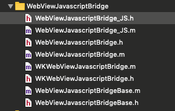
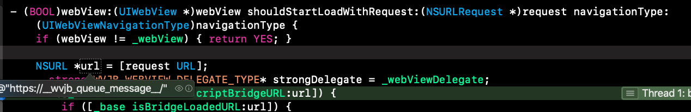
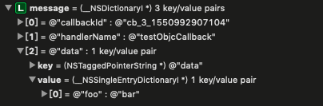

WebViewJavascriptBridge GitHub地址
jsBridge框架是解决客户端与网页交互的方法之一。最主要的实现思路是客户端在webivew的代理方法中拦截url，根据url的类型来做不同处理。接下去会以jsBridge提供demo中的为例，从使用的角度，一步步分析它是如何实现的。
注：在iOS8后，苹果推出了WKWebView。对于UIWebView和WKWebView，jsBridge都能实现客户端与网页交互，且实现的方式类似，因此本文会以UIWebView为例来分析。
本文会通过以下几点来介绍框架的实现：
- 框架结构
- WebViewJavascriptBridge_JS
- WebViewJavascriptBridge WKWebViewJavascriptBridge
- WebViewJavascriptBridgeBase
- 网页通知客户端的实现
- 客户端通知网页的实现
- js环境注入问题
- 总结
框架结构

WebViewJavascriptBridge_JS
WebViewJavascriptBridge_JS 简单的说就是网页的js环境，需要客户端在网页初始化的时候注入到网页中去。如果不注入就无法实现网页与客户端的交互。该类只有一个返回值为NSString 的方法:NSString * WebViewJavascriptBridge_js(); 。
至于究竟何时注入，如何注入，会在接下去的分析中写到。
WebViewJavascriptBridge WKWebViewJavascriptBridge
这两个类分别对应UIWebView和WKWebView。看名字就可以知道这两个类是交互的桥梁，不管是网页同时客户端还是客户端通知网页，都是通过这两个类来完成通知的。
WebViewJavascriptBridgeBase
WebViewJavascriptBridgeBase个人认为类似数据处理工具类。
该类中存着客户端注册的方法以及对应实现：`@property (strong, nonatomic) NSMutableDictionary* messageHandlers;
也存着客户端通知网页后的回调实现：@property (strong, nonatomic) NSMutableDictionary* responseCallbacks;
同时，该类还实现了之前提的网页js环境注入方法：-(void)injectJavascriptFile;
还有一些url类别判断方法，这里不一一举例了。
网页通知客户端的实现
要让客户端能够响应网页的通知，首先必须使用桥梁注册方法名和实现，然后存起来，等待网页的通知。
1 | [_bridge registerHandler:@"testObjcCallback" handler:^(id data, WVJBResponseCallback responseCallback) { |
客户端注册方法时，bridge做了些什么事情呢？其实bridge只是简单地将方法名和实现block分别作为键值存到了messageHandlers属性中。
1 | - (void)registerHandler:(NSString *)handlerName handler:(WVJBHandler)handler { |
接下来，网页想要调用客户端的testObjcCallback方法了。网页上有一个按钮，点击后调用客户端方法，网页的js代码如下：
1 | var callbackButton = document.getElementById('buttons').appendChild(document.createElement('button')) |
这里网页调用的方法为bridge.callHandler，这里你可能会有疑问，为什么bridge对象哪来的，callHandler方法又是哪来的。关于这个，这边先简单的说一下：这个bridge其实就是我们之前提到的js环境提供的，callHandler方法也是环境中的代码实现的，如果没有js环境，网页就拿不到bridge，也就无法成功调起客户端的方法。这边可以简单的理解为这个环境就相当于是我们客户端的WebViewJavascriptBridge框架，客户端如果不导入，也就无法使用jsbridge。网页也是类似，如果不注入，就无法使用jsbridge。而区别就在于，客户端的这个框架是运行前导入的，而网页这个环境是由客户端加载到该网页时，动态注入的。
至于详细的注入，会在下文中分析说明。
js环境文件中，bridge.callHandler方法实现：
1 | function callHandler(handlerName, data, responseCallback) { |
由于本质上网页处理发送通知的思路和客户端的一致，而我们队客户端的oc代码更好理解，因此我打算将这段代码的分析跳过，等到分析客户端通知网页时，再仔细讲。这边只需要知道
1.字典中加了一个callbackId字段，这个字段是用来等客户端调用完方法后，网页能找到对应的实现的。同时网页将实现存到了它管理的字典中：responseCallbacks[callbackId] = responseCallback;
2.网页最终将字典压到了sendMessageQueue中，并调用了messagingIframe.src = CUSTOM_PROTOCOL_SCHEME + '://' + QUEUE_HAS_MESSAGE;
1 | var CUSTOM_PROTOCOL_SCHEME = 'https'; |
3.字典中的数据是：
1 | { |
这时，客户端的webview代码方法就能拦截到url：

正是网页调用的：https://__wvjb_queue_message__/。然后客户端是如果去判断url并做相应处理呢？下面为拦截的源码：
1 | - (BOOL)webView:(UIWebView *)webView shouldStartLoadWithRequest:(NSURLRequest *)request navigationType:(UIWebViewNavigationType)navigationType { |
这时，由于传过来的是https://__wvjb_queue_message__/，会进[_base isQueueMessageURL:url]的判断中，然后做以下处理：
1 | NSString *messageQueueString = [self _evaluateJavascript:[_base webViewJavascriptFetchQueyCommand]]; |
第一行代码为从网页的sendMessageQueue中获取到数据，还记得之前网页把调用的相关数据存到了sendMessageQueue中吗？这个时候，客户端又把它取出来了。然后第二行代码，客户端开始处理这个数据：
1 | - (void)flushMessageQueue:(NSString *)messageQueueString{ |
这段代码有点多，核心思路是将获得的数据转换成字典，然后从客户端的messageHandlers中取出方法名对应的block，并调用：handler(message[@"data"], responseCallback);

这边还需要特别注意的是，callbackId问题。在这个例子中，是存在callbackId的，因为网页是有写调用完客户端后的回调的，所以这边做了处理，如果有callbackId的话，再创建一个responseCallback，等客户端调用完网页通知的方法后再调用。
还记得当初客户端注册方法时的代码吗：
1 | [_bridge registerHandler:@"testObjcCallback" handler:^(id data, WVJBResponseCallback responseCallback) { |
这边就将这个handler的block取出来，然后将message[@"data"]和responseCallback作为参数调用。调用完后又调用了responseCallback，将数据又发回网页去。这边具体的发送会在下文客户端通知网页分析中写到。这边这需要知道，如果存在callbackId,就会将callbackId和数据又发回网页。
1 | WVJBMessage* msg = @{ @"responseId":callbackId, @"responseData":responseData }; |
以上就是网页通知客户端的大致实现。
客户端通知网页
其实客户端通知网页的大致思路是和上文类似的。在客户端调用之前，网页肯定是已经注册好了客户端要调用的方法，就如上文中，客户端也已经注册好了网页通知的方法一样。下面为网页注册的代码：
1 | bridge.registerHandler('testJavascriptHandler', function(data, responseCallback) { |
看看registerHandler方法如何实现：
1 | function registerHandler(handlerName, handler) { |
恩，是不是和客户端的注册非常相似？
接下来再看看客户端是如何调用的：
1 | - (void)callHandler:(id)sender { |
callHandler方法实现：
1 | - (void)callHandler:(NSString *)handlerName data:(id)data responseCallback:(WVJBResponseCallback)responseCallback { |
sendData实现：
1 | - (void)sendData:(id)data responseCallback:(WVJBResponseCallback)responseCallback handlerName:(NSString*)handlerName { |
客户端将数据封装成一个字段，这时这个字典的值为：
1 | { |
还是和网页的处理非常一致。下面看看客户端是如何通知网页的：
1 | - (void)_queueMessage:(WVJBMessage*)message { |
客户端将字段转成js字符串，然后注入到网页中实现通知。具体方法是调用了js环境中的_handleMessageFromObjC方法，参数为字典转换后的字符串。下面看看_handleMessageFromObjC方法的实现：
1 | function _handleMessageFromObjC(messageJSON) { |
这边的处理其实和上文客户端处理message字典时没什么区别的。
这边要提一下的是这个responseId的判断逻辑，还记得网页通知客户端分析中，由于网页有实现通知完客户端后的代码，所以客户端将网页传递过来的callbackId作为responseId参数又传回去了：
1 | WVJBMessage* msg = @{ @"responseId":callbackId, @"responseData":responseData }; |
这边网页的处理是，从responseCallbacks中根据这个"responseId":callbackId字段取出block并调用，代码如下：
1 | if (message.responseId) { |
如果看到这里有点乱了，可以再看看网页通知客户端时对于字典的处理部分。
以上就是客户端通知网页的大致实现。
js环境注入问题
上文一提到这个，就说下文讲解，现在终于可以分析这一块了。
其实这个比较简单，本质上就是网页调用了一个特殊的，jsbridge规定的url，使得客户端可以拦截到并分析出是需要注入js环境的通知。然后客户端开始注入。
网页部分的代码：
1 | WVJBIframe.src = 'https://__bridge_loaded__'; |
一般这个是放在网页代码的最前面的。这样做可以让客户端在最早的情况下将环境注入到网页中。
而客户端是如何处理的呢？
1 | if ([_base isBridgeLoadedURL:url]) { |
1 | - (void)injectJavascriptFile { |
看到了吧，客户端调用WebViewJavascriptBridge_JS类的唯一的方法:NSString * WebViewJavascriptBridge_js(); ，然后通过_evaluateJavascript注入。
总结
以网页通知客户端为例：客户端会将要被调用的方法存到字典中，同时拦截网页的调用，当网页调用时，从字典中取出方法并调用。调用完后，判断网页是否有调用完的回调，如果有，再将回调的id和参数通过客户端调用网页的方式通知过去。这就完成了网页通知客户端的总体流程。
最后
这个框架是在去年就已经看完了，由于忙+懒，拖到今天才终于准备写一下。花了一下午的时间，将大体的逻辑理清楚并用文字的方式表达出来，但是由于昨晚没睡舒服，现在脑子还是有点乱，所以文章中应该有部分错别字，麻烦看到了指出一下方便我改正。还有一点，对于之前没接触过的同学，由于在调用时有responseId和callbackId，会比较乱，在此建议多看几遍。如果实在理解不了，可以评论或加我微信，我会尽我努力让你理解。最后，谢谢你的耐心阅读😆😆